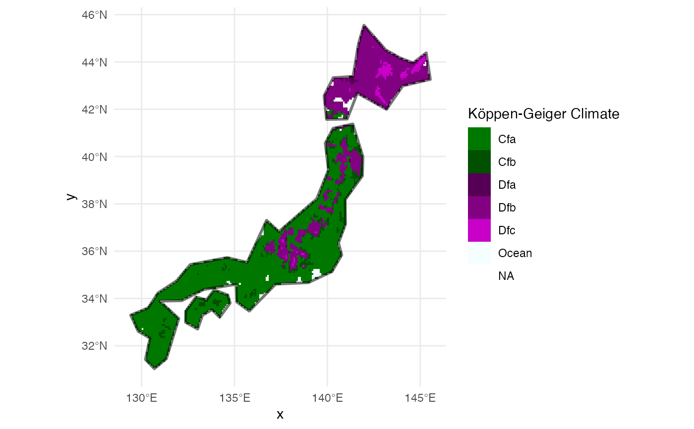

raster_kgc() gives easy access to the Köppen-Geiger climate classification
raster data. It can be cropped by a given polygon.
scale_color_kgc() and scale_fill_kgc() are ggplot2 color scales
to be used with the KGC raster.
Arguments
- mask
sf or sfc object.
- ...
passed to
ggplot2::scale_fill_manual().
Value
raster_kgc() returns a stars object.
scale_color_kgc() and scale_fill_kgc() return a ggplot2 scale.
Examples
library(ggplot2)
geo_jp = rnaturalearth::ne_countries(country = "Japan")
kgc_jp = habistats::raster_kgc(geo_jp) |> print()
#> stars object with 2 dimensions and 1 attribute
#> attribute(s):
#> KG_1986-2010.grd
#> Cfa : 3637
#> Dfb : 1689
#> Cfb : 307
#> Ocean : 151
#> Dfc : 150
#> (Other): 31
#> NA's :28160
#> dimension(s):
#> from to offset delta refsys x/y
#> x 3713 3907 -180 0.08333 WGS 84 [x]
#> y 534 708 90 -0.08333 WGS 84 [y]
ggplot(geo_jp) +
stars::geom_stars(data = kgc_jp) +
geom_sf(linewidth = 1, color = "#00000088", fill = NA) +
scale_fill_kgc(na.value = "transparent") +
theme_minimal()
